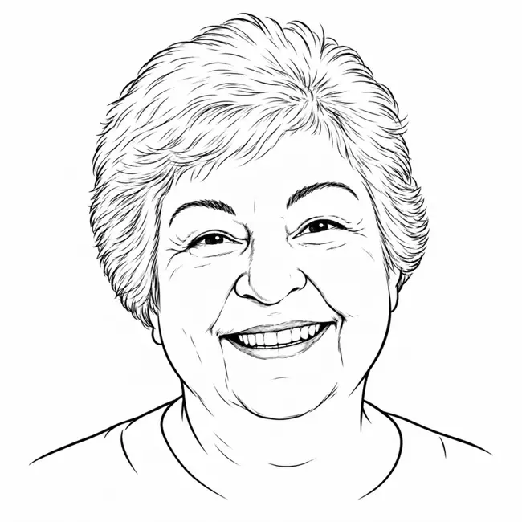

RECEITAS ONÇA
O CADERNO DA VÓ MARIA CARMELA
A–Z
De A–Z
🥕
Por ingrediente
＋
Adicionar receita
0
receitas
Nome ou ingrediente · A–Z
Todas
UMA NOVA LEMBRANÇA
Adicionar receita
×
Nome da receita
Categoria
Doces
Salgados
Pratos principais
Outros
Tempo de preparo
Rendimento
Ingredientes
Modo de preparo
Foto do prato pronto
Escolha uma foto para a capa.
Seu vídeo preparando a receita
Vídeo de até 100 MB.
Dicas e memórias da vó
Cancelar
Guardar receita ♡